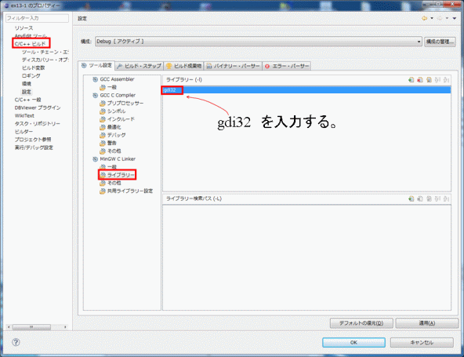

| グラフィックスプログラムのプロジェクト作成手順 |
Eclipse上でGDIライブラリーを使ったグラフィックスプログラム（第１３回、１４回の課題プログラム）を作るに当たって、以下の手順に従って、プロジェクトファイルの作成および環境設定を行います。
(1)Eclipse上でのプロジェクトの新規作成
今までのグラフィックス関数を使わない場合と同様の手順（ツールチェーンはMinGW GCCを選択）に従って、プロジェクトを新規作成する。
(2) ヘッダファイルのダウンロード＆ペースト
ヘッダファイルgdi.hをここからダウンロードして、ソースファイル（プロジェクト名.c ）が入っているフォルダにコピー＆ペーストしてください。
(3)ヘッダファイルの読み込み
・プロジェクトエクスプローラウィンドウで、プロジェクト名のアイコンを選択する。
・ファイル→リフレッシュ（またはF5ボタンをクリック）を実行する（プロジェクトエクスプローラにgdi.hが表示される）
(4)ライブラリのリンク指定
以下の手順に従って、グラフィックライブラリ：gdi32.lib をリンク指定する。
・プロジェクトエクスプローラで、プロジェクト名アイコンを選択(プロジェクト名の背景色が変わった状態にする）する。
・メニューバーの[プロジェクト]の中の[プロパティ]をクリック
（または、プロジェクト名アイコンを右クリックした時のメニューから[プロパティ]を選ぶ（メニューの一番下に隠れているので注意））
→右図のプロパティウィンドウが開く。
開いたプロパティウィンドウ左段のメニューで、
・C/C++ビルドを展開し（左の△をクリック）、[設定]を選択。
中央の設定ウィンドウで、
・MinGW C Linkerの「ライブラリ」を選択
ライブラリー画面が開く。
・右上の緑色の[＋]を選んで、
gdi32
と入力する。
(5)表示可能な文字
タイトルバーの文字（PROGRAMで設定）や、G_TEXT関数を用いた文字には、半角文字（アルファベット英数字）だけでなく、全角の日本語文字が表示できます。
(注）本プログラムはEclipseの文字コードがUTF-8に設定されていることを前提にしています。端末室PCのEclipseは初期状態ですでにUTF-8に設定されていますので何もしなくて大丈夫です。UTF-8以外の文字コード（Shift JISコードなど）が設定されている場合は、以下の方法に従って変更してください（ただし、いろいろなトラブルのもとになりますので自信のない人はやらないでください）。
○テキストファイルのエンコード設定
メニューバーの[ウィンドウ]をクリック、[設定]を選んで、設定画面を開く。
[一般] の右隣にある三角マークをクリックして展開されるリストの中から。[ワークスペース]を選択する。
開いたワークスペース画面のテキストファイルのエンコード欄をUTF-8 に設定する。
（端末室PCの場合、[デフォルト]にチェックが入っていて、デフォルトのコードがUTF-8の設定になっている）。